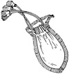
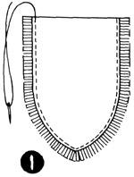
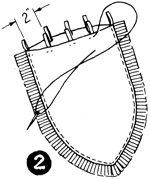
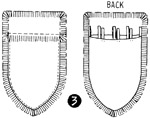
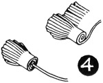

1952—How to Make Hats
by Ruby Carnahan
Fringed Felt Bag
FRINGED FELT BAG PATTERN TO MATCH FRINGED CASUAL HAT
Use pattern on page 75 for bag. Place pattern marked No. 1 on a fold of paper and cut pattern double. Use pattern marked No. 2 single. Place pattern No. 1 on felt and mark around pattern on felt and cut out two pieces. Place pattern marked No. 2 on felt, mark around pattern on felt and cut out two pieces. Cut three strips of felt 1" x 27" and fringe on side of felt strip 1/2" deep (refer to hat Illus. 5 and 7). Cut one strip of felt 1/4" x 18" for loops on bag. Cut two strips of felt 1/2" x 18" for draw strings to run through loops on bag.
ASSEMBLING BAG
Slip felt fringed strip between No. 1 felt pieces extending fringed edge and baste both pieces together (Illus. 1).
Cut strip of felt for loops into 2" pieces, fold double and baste two inches apart around top of bag (Illus. 2).
Baste and stitch fringed strips of felt all around both pieces marked No. 2 and stitch, then baste one on each side of bag at top over loops, sewing through loops, and stitch (Illus. 3).
Pull one draw string strip of felt through loops from one side and back. Pull second draw string of felt through loops and back on opposite side. Finish ends of draw strings with small fringed tassels (Illus. 4).